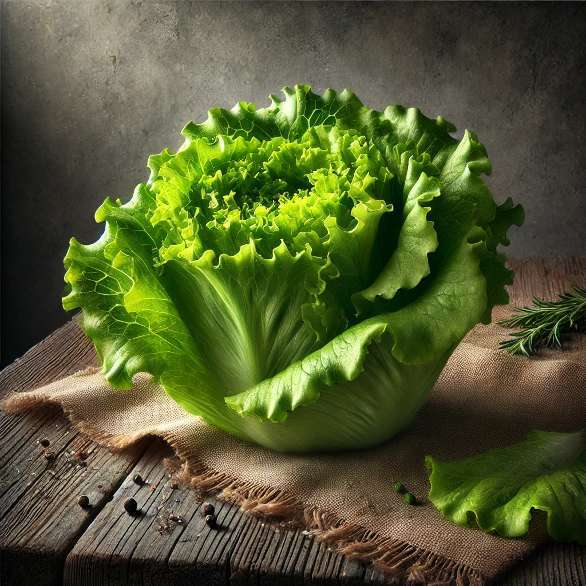
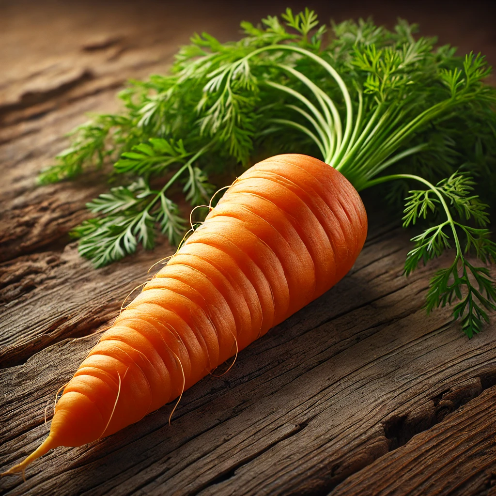
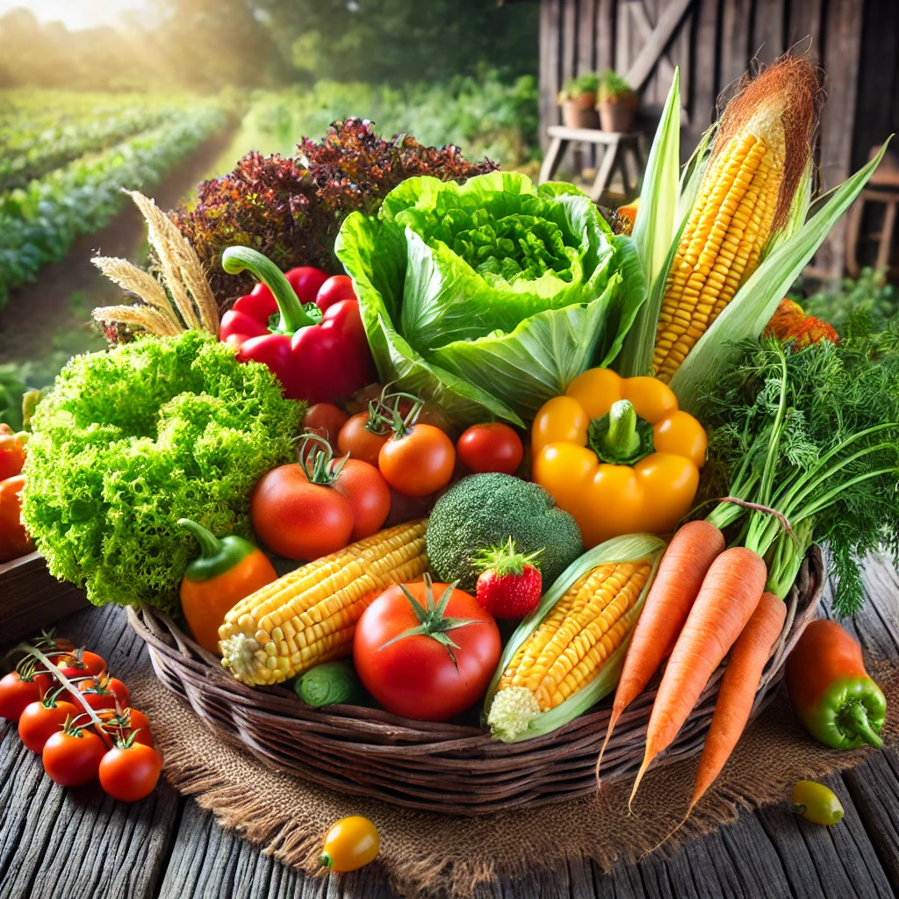

Seleção de Produtos

Alface Fresco

Cenoura Fresca
Tomate
Oferecemos produtos frescos e artesanais diretamente do campo, cultivados com carinho e cuidado.
Nosso site é dedicado a promover a agricultura familiar, valorizando os produtores locais e oferecendo uma seleção de produtos de alta qualidade, que vão desde hortaliças e legumes até doces caseiros e itens artesanais.
A agricultura familiar desempenha um papel fundamental na produção de alimentos saudáveis e sustentáveis. Ao adquirir nossos produtos, você está apoiando a economia local e incentivando práticas agrícolas responsáveis e ecológicas.
Alface Fresco
Cenoura Fresca
Tomate
Somos uma empresa familiar comprometida com a agricultura sustentável. Nossos produtos são cultivados com métodos tradicionais e respeitam o meio ambiente. Nossa missão é trazer à sua mesa alimentos de alta qualidade, cultivados localmente.